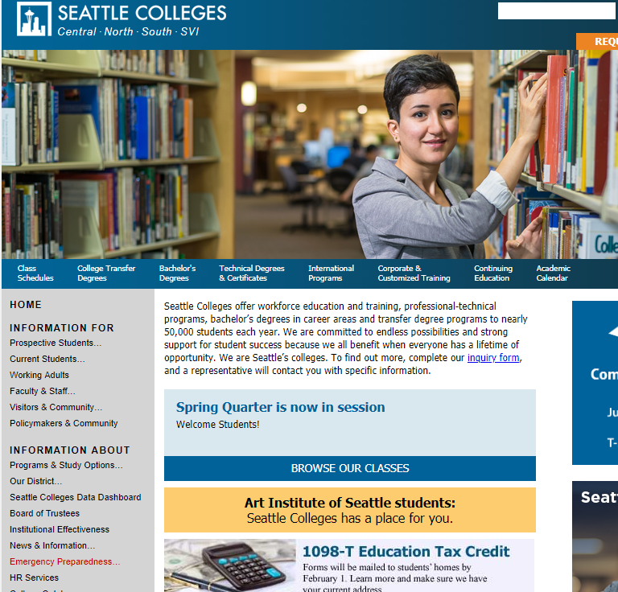
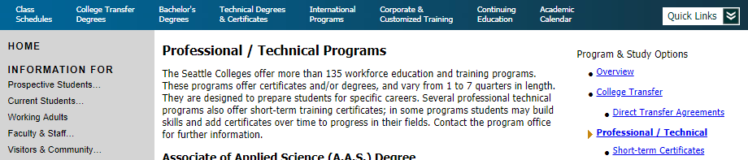
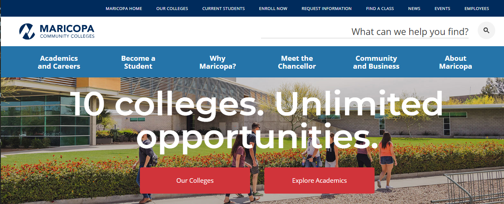
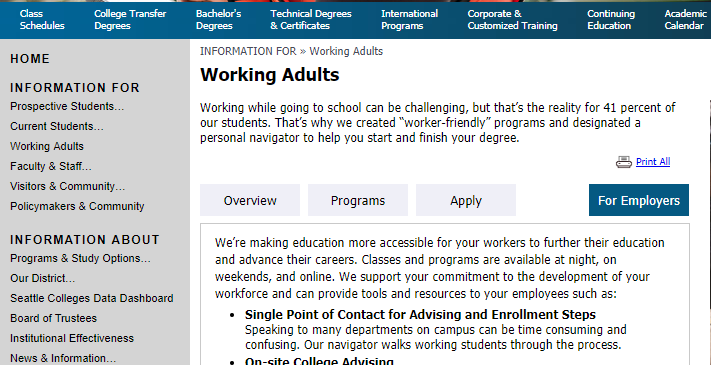

For this assigment, I analyzed the usability of the Seattle Colleges website. The criteria used in this analysis include:
- Is the purpose of the site apparent?
- Does the navigation let the user know where they are?
- Is there a clear visual hierarchy to the site?
- Is the site set up for scanning?
- Is the site free of visual distractions?
Purpose: What is this site for?
The purpose of the site is immediately apparent from the title and main menu choices. Visitors to the site can see from the title and logo in the top left-hand corner that this site provides information about the "Seattle Colleges". The menu choices in the horizontal navigation bar also let users know at a glance what kind of information this site provides.
 Seattle Colleges home pageThe left-hand vertical menu includes many more options. There is also a search option in the top right corner which would be helpful if looking for an employee, a certain class or program, or if a user otherwise knows the term for what they are looking for.
Navigation: Do I know where I am?
There are 8 choices in the horizontal navigation bar. On hover, these links change color and are underlined. Most users would know these are links due to conventional placement, the visual clues that occur on hover further emphasizes that these are links.
The menu bar does not change as you move through the pages. The title for each Page is duplicated on the page (although not always exactly). A user might not always know where they are. It would helpful if the menu bar indicated location by color/font change.
 Seattle Colleges horizontal navigation bar with Technical Degrees and Certificates page openThere are many more options avaible in the left-hand menu bar. The background color changes on hover, but otherwise these stay the same as different pages are visited. Elipses indicate when a category has more options behind it, and a pop-up menu appears on hovering over these links. There is a link to the HOME page at the top of the left-hand menu that I did not immediately notice. Having this stand out by using a different color/background color would be helpful.
Hierarchy: Is the order of importance clear?
There is so much information that creating a hierarchy for this kind of organization must be a challenge. Everything looks to be of equal importance and there are many options on the home page which means too much thinking is needed.
Headings are used throughout the site but there does not seem to be enough variety in size and weight to aid significantly in visually organizing the information by importance.
Having less options on the home page and categorizing by user (current students, prospective students, business/community members, faculty/staff) might help. The Maricopa Community College district home page does not display as many options on the top-level menu and seems easier to sort through.
 Maricopa Community Colleges home pageScannability: Can I find what I need at a glance?
There are many words and not much white space on this website. One way that the site keeps the amount of text visible at one time to a minimum is seen on the page for "Working Adults". Tabs are used to organize the information and allow users to know at a glance what information is available. The tabs also change color to let users know what section they are in. Use of tabs seems to be limited to this page.
 Working Adults webpageVisual Distractions: Is the site free of visual distractions?
This site includes enough images to add interest and is otherwise free of distractions. The Working Adults page was the only page where I saw photos scrolling. This drew my attention to the "Request More Information" link which I had not noticed so I think it serves its purpose. Too much of this would be distracting.
Conclusion
This site is huge with a vast amount of information. The main usability issue I see with this website is the amount of menu options on the main page. If these options could be grouped into categories, the amount of user thinking required could be decreased. Although the amount of clicking needed would increase, the clicking would ideally be mindless.
The navigation is consistent and helpful for the most part. Adding a few visual indications of location would enchance navigation. The site seems to follow standard conventions for placement and identification of links. A few links took me to a new website, International Students, for example, which could be intentional. Otherwise the new websites opened in a new window so I could easily return to the main website.
Creating more categories for the information on individual pages (as well as the main page) could help reduce the amount of text on pages. If all the information needs to be included, breaking the information down and requiring more clicking would be better than having so many words on one page. With less words, there would be room to add more white space and headings, which would help with scannability.